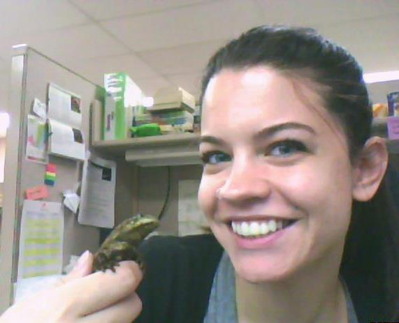

Nicole Dzenowski
Ph.D. Student
Education
B.A. Geology, Youngstown State University, 2010
B.S. Biology, Youngstown State University, 2010
M.S. Geology, Ohio University, 2012
Advisor
Dr. Stephen Hasiotis
Research
I am interested in studying the traces of both extant and extinct vertebrates and their uses in the interpretation and reconstruction of paleoecologies and paleoenvironments. My current research includes studying traces produced by a modern caecilian species (Herpele squalastoma), how these traces are affected by variations in environmental conditions, and how the traces can be used to better understand ancient environments. I will also be studying large vertebrate burrows from the Permian in order to interpret the paleoenvironment, the behavior the traces represent, and their potential tracemaker.
Publications
Dzenowski, N.D., Hembree, D.I., 2012. Examining local climate variability in the Late Pennsylvanian through paleosols: an example from the Lower Conemaugh Group of southeastern Ohio. Geosciences v. 2, p. 260-276.
Amanda Falk
Ph.D. Student
Education
B.S. Biology, Lake Superior State University, 2007
M.S. Geology, University of Kansas, 2009
Advisors
Dr. Stephen Hasiotis
Dissertation Title
Anatomy and function of bird feet--the effect of behavior, medium and avian morphotype on trackway morphology
Research
I am interested in the tracks and traces of birds, both fossil and modern, as well as the general gross morphology and functional morphology of both fossil and ancient birds. I am also interested the evolution of avian migration, avian osteology, and the origin and evolution of birds. I also have minor interests in paleoecology and vertebrate anatomy (mainly in the functional morphology of animals other than birds). My current research focuses on analyzing the behaviors of Early Cretaceous bird tracks from the Haman Formation of South Korea, re-describing and interpreting bird tracks from several areas in China, as well as performing a series of morphologic measurements on the feet of fossil and modern birds to try and reconstruct soft tissue structures on the feet of Early Cretaceous fossil birds. I am also studying the behaviors and parameters under which modern bird tracks are produced.
Publications
Gong, E., Martin, L. D., Burnham, D. A., Falk, A. R., 2010. The birdlike raptor Sinornithosaurus was venomous. PNAS, v. 107(2), p. 766–768 (Cover paper).
Alexander, D. E., Gong, E., Martin, L. D., Burnham, D. A., Falk, A. R., 2010. Model tests of gliding with different hindwing configurations in the four-winged dromaeosaurid Microraptor gui. PNAS, v. 107(7), p. 2972–2976.
Falk, A. R., Hasiotis, S. T. and Martin, L.D., 2010. Feeding traces associated with bird tracks from the Lower Cretaceous Haman Formation, Republic of Korea. Palaois, v. 25, p. 730–741.
Falk, A. R. Tracking Mesozoic birds around the world. 2011. Journal of Systematic Palaeontology, v. 9(1) p. 85-90.
Falk, A. R., Martin, L.D. and Hasiotis, S. T., 2011. A morphologic criterion to distinguishing bird tracks. Journal of Ornithology, v. 152, p. 701–716.

Brian
F. Platt
Ph.D. Student
Education
B.S. Geology, Bloomsburg University of Pennsylvania, 2001
M.S. Paleontology, University of Kansas, 2005
Advisor
Dr. Stephen Hasiotis
Dissertaton Title
Quantification of paleoecological, paleohydrological, and
paleoclimatological information  from the Upper Jurassic
Morrison Formation
from the Upper Jurassic
Morrison Formation
Research
I have diverse interests in the field of ichnology, unified
by the overarching research goal of interpreting
paleoenvironments, paleoclimate, and paleoecology. I am
particularly interested in integrating new approaches and
quantitative technologies with traditional ichnological
methods. One aspect of my research focuses on how
sedimentary and physicochemical variables influence
megafaunal track formation and preservation; for this
project I am conducting trackmaking experiments with
elephants as modern analogs for sauropod dinosaurs. My goal
is to develop a method for quantifying ancient sediment
moisture and soil moisture from fossil megafaunal
footprints. I am also integrating ichnology, paleopedology,
and geochemistry to interpret paleoclimate of the Upper
Jurassic Morrison Formation. My goal is to look for
correlations between paleoclimatic and biotic patterns that
would suggest climatic influence on paleoecology. Another
of my projects has the goal of introducing novel
quantitative measures of trace fossils and modern traces
with new 3D laser scanning technology; this will improve
interpretations of trace fossils and facilitate enhanced
statistical and ichnotaxonomic studies.
Publications
Hasiotis, S.T., Reilly, M., Amos, K., Lang, S., Kennedy,
D., Todd, J.A., Michel, E., and Platt, B.F., in press,
Actualistic studies of the spatial and temporal
distributions of terrestrial and aquatic organism traces in
continental environments to differentiate lacustrine from
fluvial, eolian, and marine deposits in the geologic
record, in Baganz, O W., Bartov, Y., Bohacs, K., and
Nummendal, D., eds., Lacustrine sandstone reservoirs and
hydrocarbon systems: AAPG Memoir 95, 56 p.
Platt, B.F., Hasiotis, S.T., and Hirmas, D.R., 2010. Use of
low-cost multistripe laser triangulation (MLT) scanning
technology for three-dimensional, quantitative
paleoichnological and neoichnological studies, Journal of
Sedimentary Research, v. 80, p. 590-610 (journal cover).
Platt, B.F., 2009. Review of Bonebeds, edited by Rogers,
R.R., Eberth, D.A., and Fiorillo, A.R., PALAIOS, DOI:
10.2110/palo.2009.BR48.
Platt, B.F., and Hasiotis, S.T., 2008. A new system for
describing and classifying tetrapod-tail traces with
implications for interpreting the dinosaur-tail trace
record, PALAIOS, v. 23, p. 3–13.
Hasiotis, S.T., Platt, B.F., Hembree, D.I., and Everhart,
M.J., 2007. The trace-fossil record of vertebrates, in
Miller, W. III, ed., Trace Fossils: Concepts, Problems, and
Prospects, Elsevier Press, p. 196–218.

© 2014 IBGS Research Group, Stephen Hasiotis